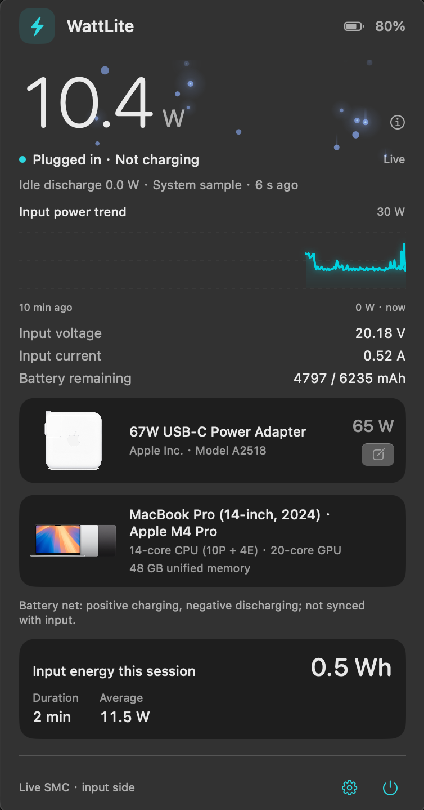
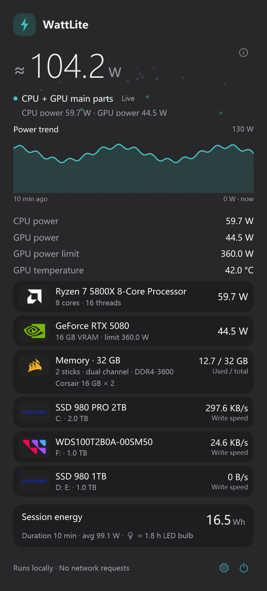

Honest, live power
SMC input watts on macOS. CPU package + GPU watts on Windows. No estimates dressed up as measurements.
macOS + Windows · native
A quiet, native power monitor for both platforms. One honest number, the components behind it, and no telemetry. Signed update checks are optional.
Prefer the details? Compare platforms


Why WattLite
No dashboards to configure, no cloud account, no noise. Just the power the machine is actually using.
SMC input watts on macOS. CPU package + GPU watts on Windows. No estimates dressed up as measurements.
A menu bar number on macOS. A taskbar badge on Windows. Always there, never in the way.
CPU, GPU and memory cards with vendor logos, live watts and the details that matter.
Every physical drive gets a card with its model, capacity, drive letters and its own write speed.
The Windows panel switches appearance instantly. The taskbar badge follows your taskbar, not the panel.
No accounts, no telemetry. The only network calls are signed update checks you can switch off. History is a local CSV you can delete.
Menu bar & taskbar
On macOS it lives in the menu bar. On Windows it sits beside the tray. Same glanceable number, no extra window.
Monospaced digits hold their place while the reading jumps, and the bolt carries a live energy-flow animation. Cached values are marked ≈, never passed off as real time.
Per-pixel transparent, pinned left of the tray, and it steps aside when a fullscreen app takes over.
Make it yours
Everything applies instantly and is remembered. No restart, no config files to edit.
Download
Both builds are free, open source, and local-first. Downloads are served by GitHub Releases, and both apps update themselves from a signed feed.
Official GitHub Releases. Usually the fastest option outside mainland China.
Third-party proxy (ghfast.top) forwarding the same GitHub file. Check the SHA-256 below after downloading.
The original menu bar monitor. SMC input power, battery view, adapter and Mac artwork, zero third-party dependencies, signed auto-updates.
4b65f7b13576e0a772e335630dec6c6be3eb5caa121e2597ab5c837dbe0a56d6WattLite-2.2.dmg · signed ad-hoc, not notarised
fc71b77c2042497df2262efc21acd442ace741c8331d7a5f2f9a9ca10f8212a9WattLite-2.2.zip · the auto-update asset
Native WPF. Standard installer or portable zip, taskbar badge, CPU + GPU cards, per-disk drive letters and write speeds, light and dark themes, signed auto-updates.
970089d8ed6b2c22cf7eb8bc0550cbdc938df5ef77a003c85346e25b1ed3b600WattLite-1.0.0-windows-x64-setup.exe · installer · unsigned
b8518efb3cc43d46d09265ef58a3823ac8d6f8549eb8b2d663690200002d8026WattLite-1.0.0-windows-x64.zip · portable · self-contained
Both apps check for updates in the background from a signed feed; automatic checks can be disabled. Existing macOS 2.1 and Windows 0.1.1 users install this version once by hand. The Windows portable build notifies but never replaces itself.
Windows Setup installs to Program Files and requests administrator rights; the app needs them for hardware sensors too. SmartScreen may warn because neither the installer nor the app is code-signed. GPU power and temperature come from NVIDIA, AMD and Intel drivers when they expose sensors; a virtual machine's virtual GPU exposes none, so power readings stay blank there. macOS builds are ad-hoc signed; first launch needs a one-time Gatekeeper approval.
No magic numbers
SMC input power, read-only through the I/O Kit. The wall outlet sees a little more because the adapter itself burns some.
The sum of the two main components, marked ≈. Memory, disks and power-supply loss are not included, so it is not wall power.
Open source
Read the source, file an issue, or star the project. The macOS app has no third-party dependencies; the Windows app is C# and XAML.